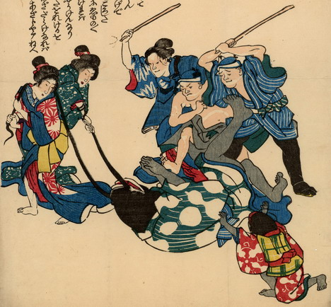

鯰の親子が町人と芸者に襲われている。父親鯰は仰向けになって、腹をけられ、芸者にひげをひっぱられており、両手を合わせて助けを乞うている。娘鯰は両手をあげて、親鯰にすがりつこうとしている。親鯰は緑地、娘鯰は赤地に、いずれも白い瓢箪の柄が入った着物を着ている。手足は黒いが、人間のものである。
出典：親書誌：U426_nichibunken_0179：即席鯰はなし；ソクセキナマズハナシ／日付：2010／資源識別子：U426_nichibunken_0179_0001_0000
Copyright (c)2010- International Research Center for Japanese Studies, Kyoto, Japan. All rights reserved.